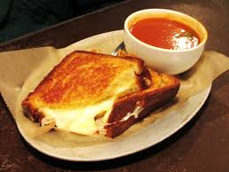

Grilled Cheese Sandwich
This page is about the recipe for Grilled Cheese Sandwich. But if you are looking for another recipe, you may go back to Home.

Description
Learn how to make a grilled cheese sandwich in a nonstick pan with buttered bread and American Cheddar for a classic hot sandwich.
Everyone needs to know how to make a classic grilled cheese sandwich. Whether you're a beginner cook or an old pro, you'll come back to this top-rated grilled cheese recipe again and again.
Ingredients
- 4 slices white bread
- 3 tablespoons butter, divided
- 2 slices Cheddar cheese
Steps
- Gather all ingredients.
- Preheat a nonstick skillet over medium heat. Generously butter one side each bread slice.
- Place 1 slice bread, butter-side down, in the hot skillet; top with 1 slice cheese.
- Place 1 slice bread, butter-side up, on top cheese.
- Cook until lightly browned on one side; flip and continue cooking until cheese is melted.
- Repeat with remaining bread and cheese slices. Serve and enjoy!